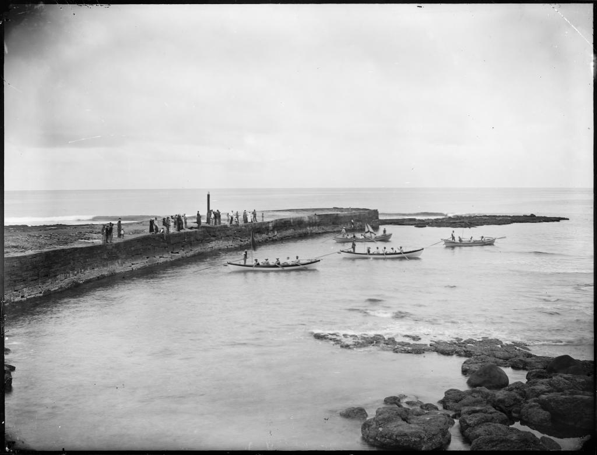

Norfolk Island
Introduction
The Kingston and Arthurs vale Historic Area (KAvHA) is of outstanding signifcance to the nation as a convict settlement spanning the era of transportation to eastern Australia between 1788 and 1855. Europeans were not the first people to inhabit Norfolk island. Stone tools found at both Emily and Slaughter Bays within KAvHA indicate that Polynesian settlement of the area occurred between AD 1200 and AD 1600. Visited by Captain James Cook RN in 1774, Norfolk island was settled on 6 March 1788, six weeks after the First Fleet landed in Sydney. A settlement was established at Kingston, with crops sown in the adjoining valley, Arthurs vale. To relieve the food pressures in the infant colony of New South Wales, Governor Philip relocated around one-third of Sydney’s population to Kingston. Both convicts and free settlers farmed small holdings of land. The rest settlement’s population peaked at 1156 in May 1792. By 1804, the free settlers on the island signifcantly outnumbered the convicts who represented 23 per cent of the total population of 1084. Abandoned in 1814, the settlement’s buildings were destroyed. In 1825, the island was re-occupied to provide secondary punishment of convicts. Secondary punishment was designed to revive the fear of transportation and deter crime in Britain and the colonies. It was a sentence applied to transported convicts who re-offended in the colony. KAvHA developed a reputation as one of the harshest and cruelest of Australia’s penal settlements. The worst of the convict population from both New South Wales and van Diemen’s Land were sent to Norfolk island. They were men who had become so brutalised by the system that ever increasing levels of punishment only served to make them more recalcitrant.

Description
Kingston and Arthurs Vale Historic Area (KAVHA) is situated on the southern side of Norfolk Island fronting Slaughter Bay. Referred to as KAVHA it is a cultural landscape which includes an agrarian landscape (Arthurs Vale, Watermill valley and the northern hillsides) and the settled coastal plain at Kingston. Hills to the north and west fringe the settlement on the coastal plain. Roads provide ways through KAVHA, linking the groups of structures, access to the landing place, the foreshore, the cemetery and bridges. The Kingston plain is Norfolk’s only coastal plain area with beach, dune and a coral edged lagoon. The convict barracks and gaol were located on the foreshore. Swampy land separated the convict accommodation from the military and civil accommodation arranged on the inland side of the coastal flat while a succession of Government houses were positioned in commanding locations. The many surviving buildings at the site reflect these arrangements.

History
Europeans were not the first people to inhabit Norfolk Island. Stone tools have been found at both Emily and Slaughter bays within KAVHA. Archaeological investigations have revealed evidence of landscape modifications in the Emily Bay area including artefact assemblages and structural remains that have been interpreted as a rudimentary marae, a religious structure characteristic of East Polynesian culture. Radiocarbon dating indicates Polynesian settlement of the area occurred between AD 1200 and AD 1600.

Location
Kingston Pier
Work began on the pier in 1839 under the supervision of the Royal Engineer, Lieutenant Lugard. Building finished in 1849 but it was never completed to its original design. Much of the work was done by convicts who had committed additional offences on Norfolk Island. They often worked up to their waists in seawater, wearing heavy chains weighing up to 16kgs. They quarried rock from underwater and broke it up for use.
